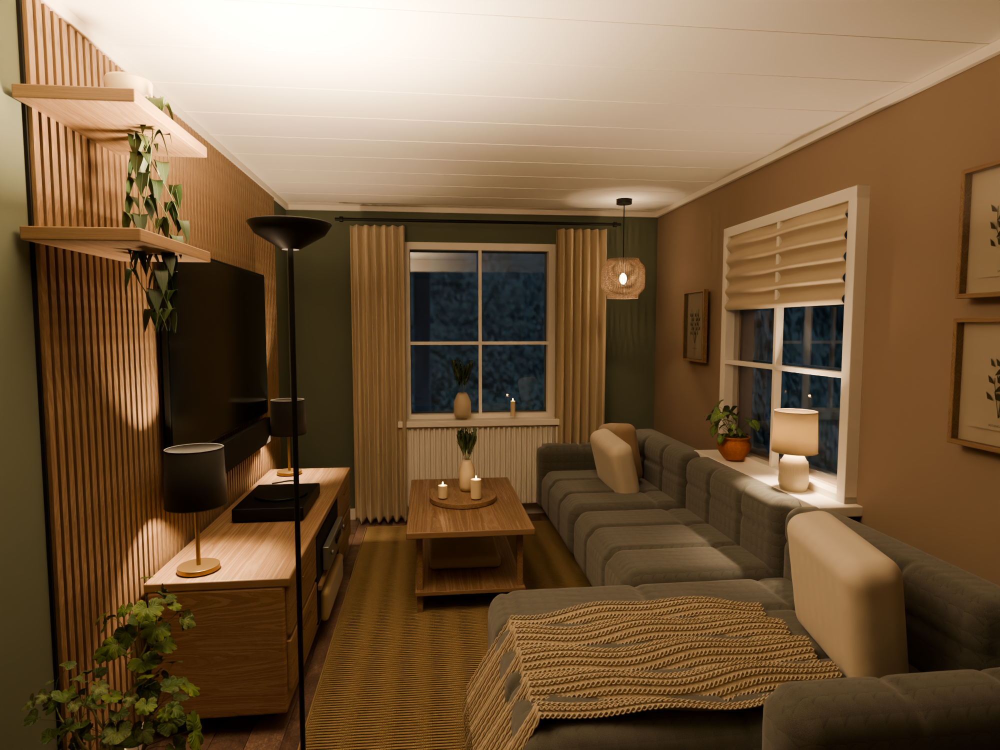

Move lamps and try their controls freely. Nothing renders automatically.
Add a lamp, then click its position in the room. Drag a selected lamp to move it, or use the measurements in its controls. Plan view makes positions easier to see. Wall lights snap to the chosen wall.
Every lamp has its own switch, dimmer, light colour and assumed output. Demo edits stay in this browser. Sign in and save a private project to store your work with your Spaces account. Export a layout as a portable backup.
The fast preview is for placement. It has working light and shadow approximations and extra visibility lighting. It does not reproduce bounced light or predict room brightness. Sign in and save a private project before requesting a full image. Private project edits save automatically to your account; images update only when you request a render. Jobs run one at a time. Finished private images stay in My projects so you can return later.
The TV bench, TV, soundbar, turntable, player, amplifier and optional bench lamps can be moved individually. Use Group TV arrangement to select members and preserve their spacing while moving or rotating them. Click a grouped piece in the room to move its group, or select a named piece in the list to edit it individually. Ungrouping keeps positions. Groups and individual poses save with the layout and are included in the next requested render.
Select these items in In your room to move, resize, duplicate or remove them. The library includes Fibrotech PREMIUM panels in seven finish approximations, floating shelves, two photographed potted plants and trailing ivy. The upper shelf can keep its trailing plant attached. Plant position is measured at the pot base; set the height to place it on furniture. Removed starting items can be restored.
The room uses your supplied dimensions, corrected sofa and window placement, the 180 cm bench, 21 mm acoustic panels, LG G5 65″ and NSG10TY soundbar. Bookshelf speakers are removed. Dublin upholstery follows your ILVA references with continuous padded channels and a fine, darker Crush Forest bouclé material shared by both renderers. Fabric colour and loop structure remain a visual approximation. Paint uses Dyrup’s Dried Oregano and Country Soil digital swatches with a matte finish approximation.
Physical paint colour, fabric reflectance, fixture output and beam distribution remain approximate. Generic lamps are not manufacturer photometric models. The chaise projection, end-window position, frame trim and forward stove area are still estimated.
Textures and photographed plants: Poly Haven, CC0. ILVA sofa reference. Dried Oregano · Country Soil.
Choose the pieces that should move together. The current TV arrangement and items on the bench are selected to start.
Grouping does not move anything. You can change members or ungroup later. Items attached to walls or the ceiling keep their mounting constraints.
Paste the exact product and variant link. Spaces checks the shared library first.
Check the front, sides and back against the product reference. A correct size alone does not establish a correct shape or finish. No AI generation is used.
Your private projects and reference images stay with your Spaces account. Product models are stored in the separate shared library. Privacy.
Use your existing account. New Spaces accounts still need an invitation and a Spaces username.
New passwords need at least 12 characters. Registration is invitation-only.
Signed in as .
Connect your provider here to keep using this same Spaces account and its private projects.
Save this code somewhere private. If you lose access to your sign-in method, it lets you recover your account without email. Spaces cannot show it again.
The current room becomes a private project. Once saved, its matching demo draft is cleared from this browser so it is not left visible after sign-out.
These belong to this project. Uploading does not request a render or AI generation.